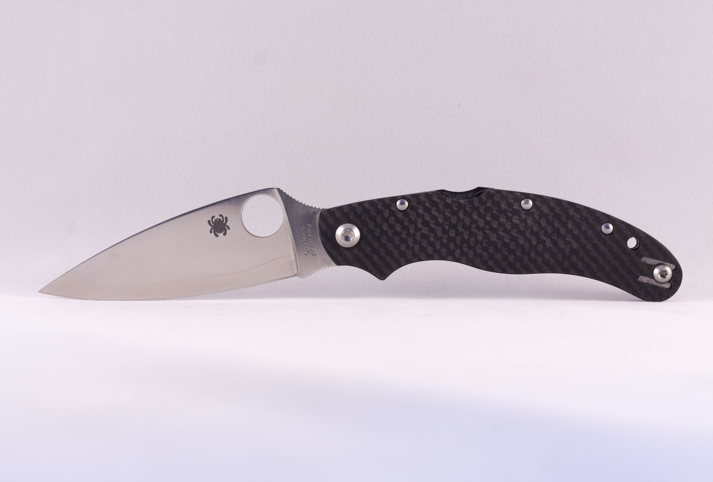

Spyderco Caly 3.5


The Calypso is one of the classic mainstays that spawned numerous variations and converted legions of knife buyers to the benefits of flat-ground, thick leaf-shaped blades. This is a workingman’s/woman’s folder founded on the premise that a comfortable pocketknife should feel like a natural extension of your hand.
- Designer: Sal Glesser
- Mechanism: Lockback
- Action: Manual-opening
- Blade Length: 3.40" (8.6cm)
- Blade Thickness: 0.118" (3mm)
- Open Length: 7.65" (19.4cm)
- Closed Length: 4.25" (10.8cm)
- Carbon Fiber Handles
- Blade Steel: ZDP 189 (63-64 HRC)
- Weight: 3.1oz (88g)
Product ID: caly35
*Information courtesy of Spyderco.